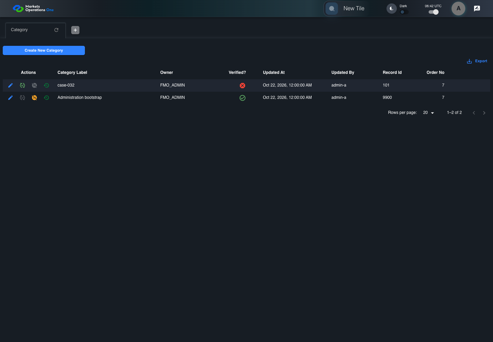

BFF-ADM-032 current BFF administration through actual UI
PASS · application/run-072/bff-adm-032-current-bff-administration-through-actual-ui-5764412caffc-attempt-1 · ACTUAL_APPLICATION_LOCAL_SERVICES
Actual current React and exact-current BFF admin controllers/services/JPA with actual migration DDL in disposable PostgreSQL. Controlled OUD/EMS2 identities and local Spring bootstrap. Fixture SQL seeds/mutates isolated records; service errors are actual database errors. Undefined agreed messages remain unresolved acceptance.
2026-10-22T06:42:03.195Z to 2026-10-22T06:42:08.641Z
Assertions and result · Artifact manifest · Exact run inputs and source hashes
Result SHA-256:967cef37d28abaa25781d1a69ae8e8558db2db24ff51583a2239c6db2b84acc4Machine observations
- actual-identity-projection.json
275e279f6e92ffebb62f55b78ad1015f90e645922c8a3759c6bb940905d67f25 - actual-migration-schema.json
513e81517c7aae67d062c25f670f12e4171f3964782e531cab50c3d508a2780c - baseline-inputs.json
9fdcd9614c10b19e1f86e2847b028543fda50137fef049ada200e75bfdd54ddf - bff-boundary.json
1add5d5fa891f1ec993e042b22774b6b6062e6906b65b345fba95eb97fcbf426 - committed-ui-submission-comparisons.json
551319d90e857bab321f610668e08890b0f7cbd054aa47639fe4ff431251dc5c - creation-clock.json
c81e634f641999ad5d40dc170105ed6d45dc872e13b0241c2f2fcda20b54fd90 - fixture-step-4.json
48a09d059f489dac9bd6eefcf3e227a8897f69ef853376f7343be92dc3249439 - initial-persisted-records.json
79eae79cd81584e4256daa1fb269aa2c741ce9a6a4e2200a1c439ce85ddf778e - persisted-after-submit.json
a4796fedd3bbfb81098b6454c253bb01ee4c929e0c885231cd87842693c43640 - ui-origin-bff-requests.json
50b07d921d454c8036a207bbdb665eb3b52d315f432938a9055f73eaab76b359
Screenshot capture: CAPTURED. Named frames: 12.
Step screenshot bindings: COMPLETE. 11/11 canonical steps have execution screenshots.
Bindings measure structural coverage only. They do not establish screenshot content quality or relevance.
Screenshot content review: NOT_REVIEWED. Recorded context: 0/12 frames. Identical image bytes: 6 repeated frames. Recorded context does not establish human visual review.
Canonical step timeline
Given Admin A uses subject "admin-a" with role "FMO_ADMIN" in an isolated authenticated browser
Execution: PASSED.1. step-01 Visible state after step 1: Given Admin A uses subject "admin-a" with role "FMO_ADMIN" in an isolated authenticated browser
2026-10-22T06:42:05.843Z · 1440×1000
Step: /Users/lushevol/code/github/ratan-release-impact/workbench/tasks/ui-test-coverage-20261022/test-cases.md:16032
SHA-256:c8610df9a58fcf58a62d7c24b7165dcbd74848e9faefcd35c17529cea5a2044aAnd the controlled Category fixture records the initial grid rows and persisted values
Execution: PASSED.
2. step-02 Visible state after step 2: And the controlled Category fixture records the initial grid rows and persisted values
2026-10-22T06:42:06.008Z · 1440×1000
Step: /Users/lushevol/code/github/ratan-release-impact/workbench/tasks/ui-test-coverage-20261022/test-cases.md:16033
SHA-256:c8610df9a58fcf58a62d7c24b7165dcbd74848e9faefcd35c17529cea5a2044aImage bytes match frame 1. An unchanged image can be valid for consecutive assertions. This match does not establish correct step content.
And the controlled creation clock returns 1700000000000 milliseconds
Execution: PASSED.
3. step-03 Visible state after step 3: And the controlled creation clock returns 1700000000000 milliseconds
2026-10-22T06:42:06.071Z · 1440×1000
Step: /Users/lushevol/code/github/ratan-release-impact/workbench/tasks/ui-test-coverage-20261022/test-cases.md:16034
SHA-256:24e6efceb71657ddcc0de767056116e0776261f5cdb0a90874d61078dd81a665And the baseline fixture data defines "Category Label" as "case-032"
Execution: PASSED.
4. step-04 Visible state after step 4: And the baseline fixture data defines "Category Label" as "case-032"
2026-10-22T06:42:06.136Z · 1440×1000
Step: /Users/lushevol/code/github/ratan-release-impact/workbench/tasks/ui-test-coverage-20261022/test-cases.md:16035
SHA-256:24e6efceb71657ddcc0de767056116e0776261f5cdb0a90874d61078dd81a665Image bytes match frame 3. An unchanged image can be valid for consecutive assertions. This match does not establish correct step content.
And the prepared database uses the inspected migration DDL and reports its applied schema revision
Execution: PASSED.
5. step-05 Visible state after step 5: And the prepared database uses the inspected migration DDL and reports its applied schema revision
2026-10-22T06:42:06.202Z · 1440×1000
Step: /Users/lushevol/code/github/ratan-release-impact/workbench/tasks/ui-test-coverage-20261022/test-cases.md:16036
SHA-256:24e6efceb71657ddcc0de767056116e0776261f5cdb0a90874d61078dd81a665Image bytes match frame 4. An unchanged image can be valid for consecutive assertions. This match does not establish correct step content.
When Admin A clicks the button labeled "Create New Category" on the Category administration page
Execution: PASSED.6. step-06 Visible state after step 6: When Admin A clicks the button labeled "Create New Category" on the Category administration page
2026-10-22T06:42:06.473Z · 1440×1000
Step: /Users/lushevol/code/github/ratan-release-impact/workbench/tasks/ui-test-coverage-20261022/test-cases.md:16037
SHA-256:9b92ef8bcff7a64d9e19eca1e28faa1b0c2400a49d2b78797c933fd46522f982Then the dialog titled "new ID: 1700000000000" is visible on the Category administration page
Execution: PASSED.7. step-07 Visible state after step 7: Then the dialog titled "new ID: 1700000000000" is visible on the Category administration page
2026-10-22T06:42:06.630Z · 1440×1000
Step: /Users/lushevol/code/github/ratan-release-impact/workbench/tasks/ui-test-coverage-20261022/test-cases.md:16038
SHA-256:864e00175061c1c440d5bdcccbc8110d80ad257d87dc334b808b8811188a6af6When Admin A fills the textbox labeled "Category Label" with exactly 256 ASCII "a" characters in dialog "new ID: 1700000000000"
Execution: PASSED.8. step-08 Visible state after step 8: When Admin A fills the textbox labeled "Category Label" with exactly 256 ASCII "a" characters in dialog "new ID: 1700000000000"
2026-10-22T06:42:07.312Z · 1440×1000
Step: /Users/lushevol/code/github/ratan-release-impact/workbench/tasks/ui-test-coverage-20261022/test-cases.md:16039
SHA-256:fefce5963cdcfae31fa1ddffc3d87864f5d817b44065469eb270c65e39f66949And Admin A clicks the button labeled "Create" in dialog "new ID: 1700000000000"
Execution: PASSED.9. step-09 Visible state after step 9: And Admin A clicks the button labeled "Create" in dialog "new ID: 1700000000000"
2026-10-22T06:42:07.672Z · 1440×1000
Step: /Users/lushevol/code/github/ratan-release-impact/workbench/tasks/ui-test-coverage-20261022/test-cases.md:16040
SHA-256:01a04fb81e8058d810c301457b305e7ed305deca8ff146adcee63fb0b719312aThen the Category data grid with column "Record Id" row identifiers and loaded field values equal the initial grid snapshot on the Category administration page
Execution: PASSED.
10. step-10 Visible state after step 10: Then the Category data grid with column "Record Id" row identifiers and loaded field values equal the initial grid snapshot on the Category administration page
2026-10-22T06:42:07.879Z · 1440×1000
Step: /Users/lushevol/code/github/ratan-release-impact/workbench/tasks/ui-test-coverage-20261022/test-cases.md:16041
SHA-256:01a04fb81e8058d810c301457b305e7ed305deca8ff146adcee63fb0b719312aImage bytes match frame 9. An unchanged image can be valid for consecutive assertions. This match does not establish correct step content.
And the alert with severity "error" in the portal snackbar contains the exact text "Record not created."
Execution: PASSED.
11. step-11 Visible state after step 11: And the alert with severity "error" in the portal snackbar contains the exact text "Record not created."
2026-10-22T06:42:07.980Z · 1440×1000
Step: /Users/lushevol/code/github/ratan-release-impact/workbench/tasks/ui-test-coverage-20261022/test-cases.md:16042
SHA-256:01a04fb81e8058d810c301457b305e7ed305deca8ff146adcee63fb0b719312aImage bytes match frame 10. An unchanged image can be valid for consecutive assertions. This match does not establish correct step content.
Additional named frames

The final visible state after the named test assertions.
2026-10-22T06:42:08.113Z · 1440×1000Step: Test source: /Users/lushevol/code/github/ratan-release-impact/workbench/e2e/audit-specs/bff-admin.spec.ts:11
SHA-256:
01a04fb81e8058d810c301457b305e7ed305deca8ff146adcee63fb0b719312aImage bytes match frame 11. An unchanged image can be valid for consecutive assertions. This match does not establish correct step content.
Screenshots establish visible state only. Assertions and traces support functional claims.